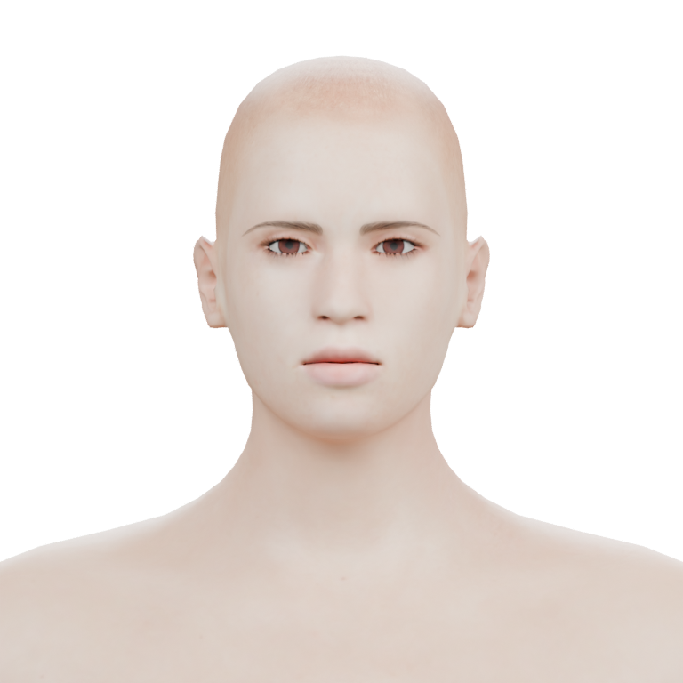
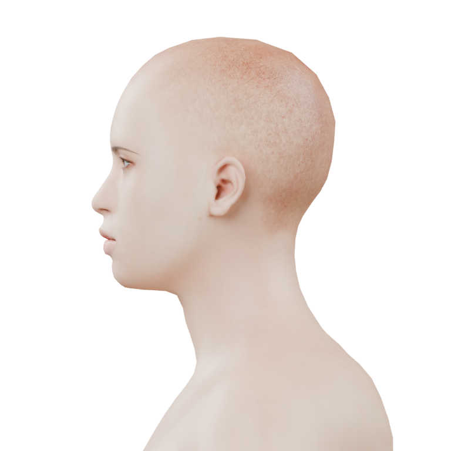
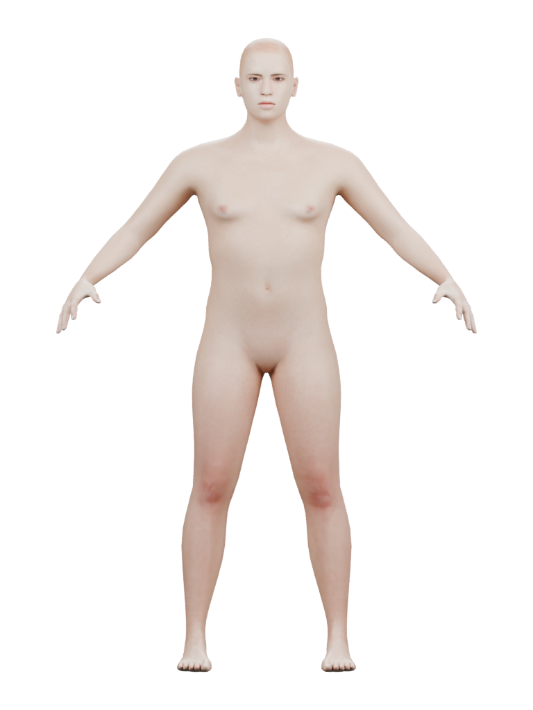

Ari · first skin palette
A warmer, browner direction on the same source geometry. Eyes and lips stay readable; scalp color and surface shine still need work. This is a palette study; face shape, curls, clothing and expressions remain ahead.
Original conceptEvidence and limits
Front

Original source Fixed palette study
Fixed palette studyProfile

Original source Fixed palette study
Fixed palette studyBody

Original source Fixed palette study
Fixed palette studyFirst original renders. Same lighting and framing for each pair; the source and accepted assets are preserved.